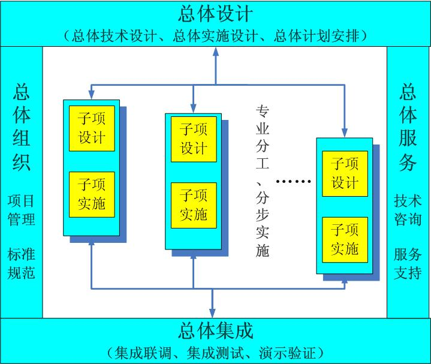

集成思路

图 6‑2集成思路图
情景分析、代理模型、经济模型、决策模型和参数不确定性分析集成。决策者设置情景假设；情景分析为自然过程（水文-生态）模型与经济模型设置假设条件和参数集以及驱动数据集；代理模型为经济模型提供参数，时间尺度是年，空间尺度是灌区，同时代理模型输出的变量经过参数不确定性分析后将作为决策模型参数，经济模型的输出也为决策模型提供参数；决策模型输出决策方案，并将决策方案提供给决策者。
软件工程层面上的组件集成。确定开发工具和开发方法，将情景分析、代理模型、经济模型、决策模型和参数不确定分析模型、可视化过程和数据（知识）管理封装成不同的组件，建立组件之间数据传输接口，检验不同组件所需数据的空间尺度和时间尺度一致性。
系统集成原则
为了作好课题实施工作，对课题过程实施有效的控制，首先明确课题研发的总体集成管理原则。
1) 采用“总体设计、分步实施、总体集成”的集成模式
本课题任务多、系统多、涉众多、周期长，对于这样的工程项目，适宜采用如图所示的“总－分－总”集成模式。即：

图 6‑3集成模式
总体设计：将所有研发内容作为整体进行“自顶向下”的设计，定义系统的总体架构，特别是课题总体技术参考模型、系统体系结构设计；重视标准和规范的选用和制订；划分系统间的关系和系统接口的设计，以及集成技术的研究和选择；明确分工，设计合理有效的开发、集成、验证、演示、发布、配发和安装、运行流程；
分项建设：发挥不同参研单位的技术优势，分步完成子课题建设；
总体集成：集成各个任务子课题，形成互联互通、信息共享的统一系统。
2) 划分清晰的集成层次
本课题整体集成技术跨度大，集成内容多，为了能够使多家参研单位提供和开发的系统有机的集成到一起，必须在数据层面、应用层面、界面层面、安全层面和支撑环境层面，采用各类技术手段，保证系统整体集成的全面性、开放性、标准型、安全性、可靠性和可扩展性。

图 6‑4集成层次图
3) 利用系统原型法，进行迭代式开发建设
在总体集成实施过程中，一方面，要充分考虑到业务需求挖掘的难度和渐进性，采用原型迭代的方式来快速明确用户需求；另一方面，项目各子项任务的分工界面和接口关联进行总体把握，为系统的功能切分和功能界定打好基础，最大程度减少系统需求方面的冲突，协调应用系统的关系，为进一步的应用系统集成打好基础。
4) 统一组织、规范管理、加强沟通
项目过程管理的力度将决定整个课题的成败，课题办公室高度重视课题管理工作。在课题研发全过程中，把各种过程活动都置于有效的受控状态。总体过程管理涵盖了任务分解，组织措施，策略选择，计划管理、进度控制，软件配置管理，软件质量管理，标准化管理，测试管理，参研单位的管理等各方面。
课题管理过程中的各项技术管理工作，始终坚持“周密计划，抓紧抓细，落到实处”的原则。
系统框架
黑河流域水资源综合管理决策支持系统总体结构如下图所示：

图 6‑5系统总体框架图
系统总体采用四层架构，包括应用层、业务层、数据层和支撑层。
1) 支撑层：
主要为黑河流域水资源综合管理决策支持系统提供硬件支撑，主要包括：支持决策支持系统运行的服务器、软件平台以及支持数据存储的数据库软件和磁盘阵列。
2) 服务层：
主要为黑河流域水资源综合管理决策支持系统提供模型、知识和数据支持和服务。模型服务主要包括流域水资源配置模型、区县产业用水配置模型、灌区尺度水资源配置模型、二次规划模型和生态水文过程等模型；数据服务主要包括多源遥感影像数据、基础地理信息数据、地面观测数据以及业务数据等数据。
3) 业务层：
主要为黑河流域水资源综合管理决策支持系统提供包括水权制度改革、产业和城市化发展、土地利用变化、绿洲规模变化和气候变化等在内的方案设计和情景设计与模拟等业务功能。
4) 应用层：
主要为黑河流域水资源综合管理的管理者